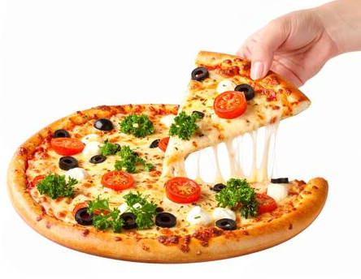
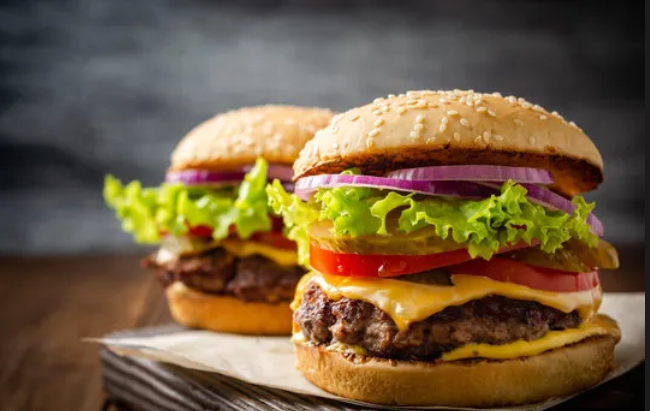
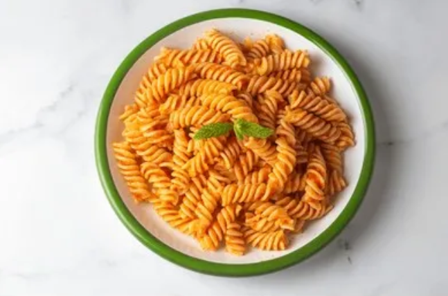
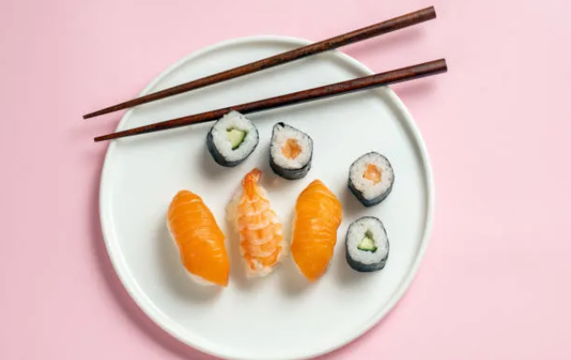
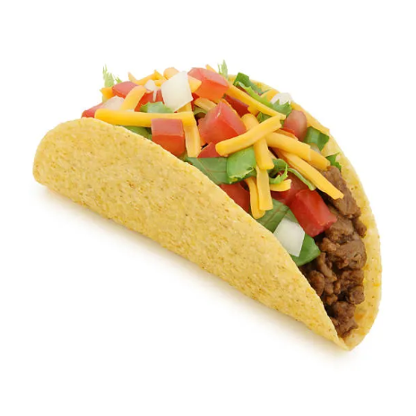
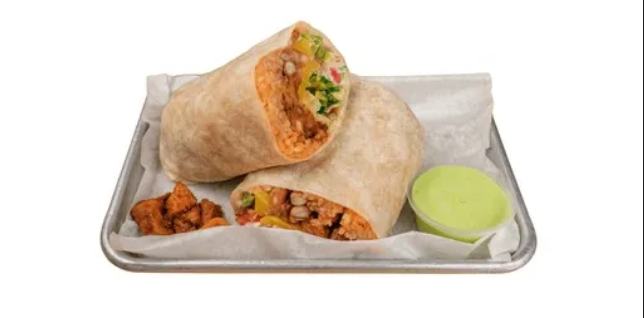
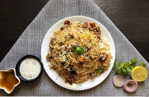

Top 10 Most Loved Foods in the World
- Pizza
- Burger
- Pasta
- Sushi
- Taco
- Burito
- Biryani
- French Fries
- Hot Dog
- Butter Chicken
1. Pizza

- Pizza[a] is an Italian dish typically consisting of a flat base of leavened wheat-based dough topped with tomato, cheese, and other ingredients, baked at a high temperature, traditionally in a wood-fired oven.
2. Burger

- Hamburger, a food consisting of one or more cooked meat patties, often beef, placed inside a sliced bread roll or bun roll.
3. Pasta

- Pasta is a type of food typically made from an unleavened dough of wheat flour mixed with water or eggs, and formed into sheets or other shapes, then cooked by boiling or baking.
4. Sushi

- Sushi is a traditional Japanese dish made with vinegared rice typically seasoned with sugar and salt, and combined with a variety of ingredients such as seafood, vegetables, or meat; raw seafood is the most common, although some may be cooked.
5. Taco

- A taco is a traditional Mexican dish consisting of a small hand-sized corn- or wheat-based tortilla topped with a filling. The tortilla is then folded around the filling and eaten by hand.
6. Burito

- A burrito is a Mexican dish consisting of a large flour tortilla wrapped around a filling of meat (often beef), beans, rice, cheese, salsa, and other ingredients.
7. Biryani

- Biryani is a mixed rice dish originating in South Asia, traditionally made with rice, meat (chicken, goat, beef) or seafood (prawns or fish), vegetables, and spices.
8. French Fries

- French fries, or simply fries, also known as chips, and finger chips, are batonnet or julienne-cut deep-fried potatoes of disputed origin. They are prepared by cutting potatoes into even strips, drying them, and frying them, usually in a deep fryer.
9. Hot Dog

- A hot dog is a grilled, steamed, or boiled sausage served in the slit of a partially sliced bun.The term hot dog can also refer to the sausage itself.
10. Butter Chicken

- Butter chicken or Murgh Makhni is a curry made from chicken cooked in a spiced tomato and butter-based (makhan) gravy.
Special mentions:
- Pav Bhaji
- Masala Dosa
- Noodles
- Roti Canai